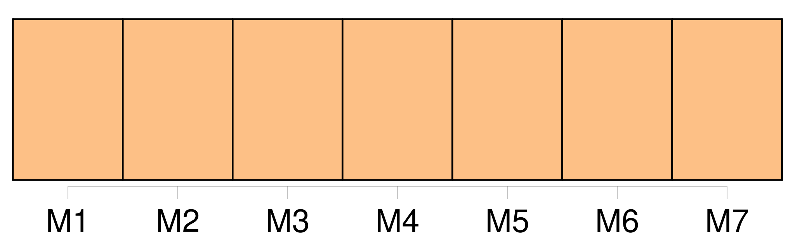
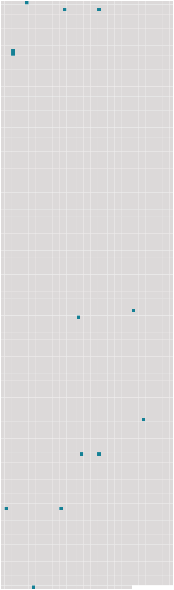

Longueur nb maillons : 13 mentions |
 |
Cette exclamation lui échappa : [6 phrases]
Décidément ( et Pécuchet en était surpris ) [on] avait encore plus chaud dans les rues que chez [soi] ! [29 phrases]
Et il se laissa conduire en face de l'Hôtel de Ville, dans un petit restaurant où l' [on] serait bien. [5 phrases] si [on] avait le temps!! [214 phrases] Il ne serait pas mal, non plus ( car [on] ne peut pas toujours travailler dehors ), d'avoir quelques bons ouvrages de littérature, et ils en cherchèrent, fort embarrassés parfois de savoir si tel livre était vraiment « un livre de bibliothèque ». [4 phrases]
Bouvard emporterait ses meubles, Pécuchet sa grande table noire ; [on] tirerait parmi des rideaux et avec un peu de batterie de cuisine ce serait bien suffisant. [71 phrases]
Enfin elle se retrouva, et [ils] arrivèrent à Chavignolles. [36 phrases]
[On] avait en face de [soi] les champs, à droite une grange, avec le clocher de l'église ; et à gauche un rideau de peupliers. [36 phrases]
Et cette plaisanterie [les] amusa tellement, que, vingt fois par jour, pendant plus de trois semaines [ils] la répétèrent. [54 phrases] [Ils] étaient sur la limite d'un champ soigneusement ameubli : un cheval que l'on conduisait à la main traînait un large coffre monté sur trois roues. |
 |
Il est possible de télécharger la ressource sur la page Ortolang |
Si vous avez des questions ou vous voyez des erreurs, merci d'envoyer un mail à silvia.federzoni89@gmail.com |